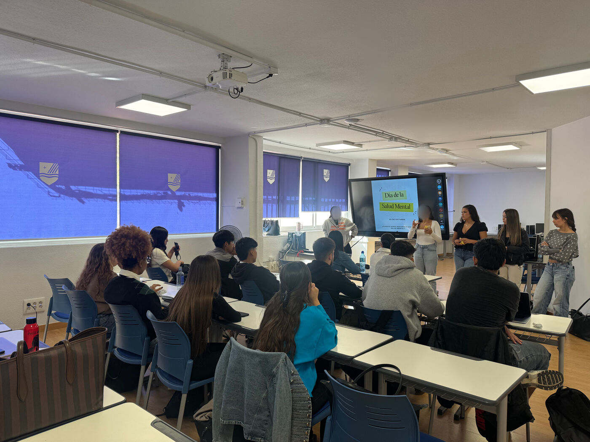

Los alumnos de Integración Social llenan el campus de talleres por el Día de la Salud Mental
Termómetro de la ansiedad, mitos y verdades, un Kahoot y un taller sobre TCA: así acercaron la salud mental al resto de alumnos y profesores del centro.
Alumnos de Integración Social · 13 de octubre de 2026

El 10 de octubre se celebra el Día Mundial de la Salud Mental. Con motivo de esta fecha, los alumnos de Integración Social del centro Davante MEDAC de Móstoles han organizado diversas actividades y talleres dirigidos al resto del alumnado.
Además, han llenado los pasillos del centro de carteles con mensajes de concienciación y cómics relacionados con la salud mental, con el objetivo de sensibilizar tanto a los alumnos como a los profesores sobre temas como los trastornos de la conducta alimentaria (TCA), la depresión y la ansiedad, entre otros.
Poner nombre a los problemas
Los talleres se centraban en exponer estos problemas de salud mental, ya que en la actualidad es un problema que afecta de manera acuciante a los jóvenes. Los talleres pretendían poner nombre a los problemas de salud mental que vivimos en nuestra sociedad, así como acercarlos más a los estudiantes, de manera que sea más fácil tratar estos problemas, resolverlos y evitar males mayores.
Los talleres
- El termómetro de la ansiedad: explicando qué es la ansiedad y valorando diferentes temas que la pueden provocar.
- Mito o verdad: desmintiendo ideas falsas sobre la salud mental.
- Kahoot de personajes famosos: para visibilizar las enfermedades de salud mental.
- El semáforo: para poner problemas personales en común y ver de qué manera se pueden solucionar: de forma profesional, con el apoyo de un familiar o de un amigo, o por tu cuenta.
- Taller informativo sobre TCA: para saber qué tipos hay y cómo se puede pedir ayuda.
El objetivo de esta iniciativa es acercar la salud mental a todos los alumnos y profesores del centro, promoviendo la información, la comprensión y la importancia de cuidar el bienestar emocional. Asimismo, se han difundido números de teléfono de ayuda para que tanto los alumnos como los profesores sepan a qué recursos pueden acudir si ellos mismos o alguien de su entorno necesita apoyo.